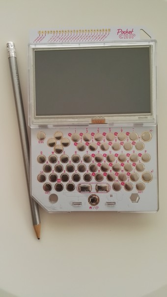

Setting C.H.I.P. up
Few weeks ago I finally received my C.H.I.P. and PocketC.H.I.P.
C.H.I.P. is the famous $9 computer crowdfunded in May 2015 via Kickstarter and PowerC.H.I.P. combines a 4.3-inch screen and a button-style QWERTY keypad with it.
Here they are in all their beauty:
| C.H.I.P. | Pocket C.H.I.P. |
|---|---|
 |
 |
Setting C.H.I.P. up
I am interested to play with both toys remotely, so I did follow Setting up CHIP as a headless server with minimal tools in order to install and configure ssh.
Here is what I did for C.H.I.P.:
connect via USB to my laptop (a Mac) via
screenand logon usr:chip, pwd:chipas per default settings (to be changed later ;-).$ screen /dev/tty.usbmodem1411follow the WiFi Connection instructions in the docs, i.e. execute the command
$ sudo nmcli device wifi connect 'homeSSID' password 'mypass' ifname wlan0update packages and install
ssh$ sudo apt-get update $ sudo apt-get install sshoptional, upgrade packages and cleanup:
$ sudo apt-get upgrade $ sudo apt-get autoremovefix locale (I use American setup, so in the GUI I did select the item
en_US.UTF-8 UTF-8):$ sudo locale-gen en_US en_US.UTF-8 $ sudo dpkg-reconfigure locales
I also renamed the hosts biochip (the bare one) and chippie (the Pocket one). Although I found various posts on how to do it I tried w/ nmtui and selected the Set system hostname item then rebooted: all worked smoothly.
ToDo’s
- disable
rootaccount (sshand non) login. - change
chipaccount password - change
rootaccount password